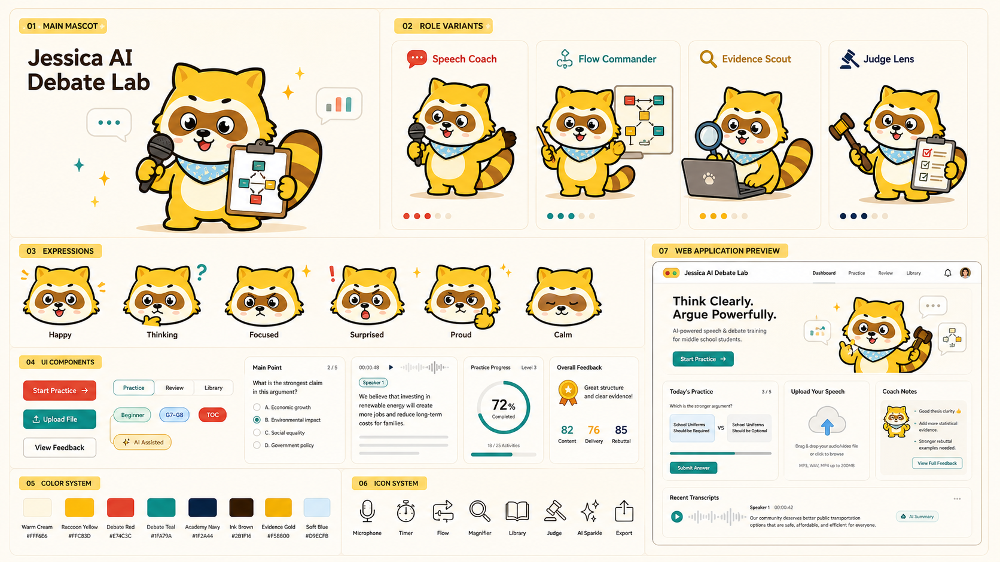

G5-G8 初学者
英语表达有基础，但还不稳定；愿意开口，需要从观点、证据和回应开始训练。

Offer clarity
英语表达有基础，但还不稳定；愿意开口，需要从观点、证据和回应开始训练。
从一段观点表达开始，逐步加入听辩、反驳、总结陈词和裁判视角。
保留录音、文字稿、训练报告、教练建议和下一阶段练习路径。
Parent FAQ
可以，先从观点表达和短回应开始，不直接进入复杂赛制。
不会。AI 用来生成对手、整理文字稿和复盘任务，孩子必须自己开口。
能看到每局训练记录、表达维度变化、教练反馈和下一轮目标。